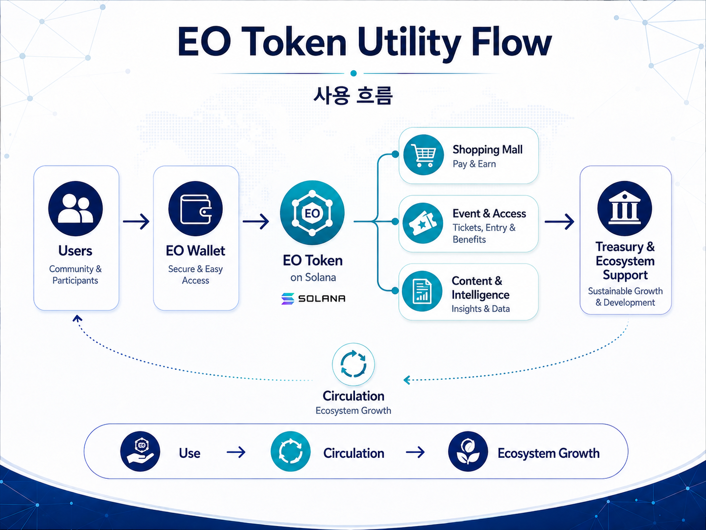

09
EO Token Utility Architecture
PUBLIC RELEASEUtility Architecture

도표 5. EO Token Utility Flow
| Utility Pillar | Initial / Planned | 핵심 사용처 |
|---|---|---|
| Commerce | 핵심 | EO Shopping Mall 전액결제 |
| Experience & Access | 핵심 | 특별석·방청권·이벤트 응모·한정경험 |
| Content & Intelligence | Phase 3 단계 확대 | EO 전용 리포트·데이터팩 |
| Promotional Reward | 프로모션 한정 | 특정 이벤트·캠페인 리워드 |
| Membership | PLANNED | 구조 추후 확정 |
| Premium Content | PLANNED | 결제·접근 구조 추후 확정 |
| External Partner Utility | 확장 | 승인된 외부 제휴처의 표준 유틸리티 모델 |
External Utility Expansion
초기에는 EO 생태계 내부 서비스에 집중하고, 안정성과 사용자 기반이 확보되면 공연·콘텐츠·커머스·여행·관광 등 외부 제휴 파트너로 사용처를 확대합니다. 외부 제휴는 초기 승인형으로 운영하고, 장기적으로 표준화된 오픈형 프로그램을 검토할 수 있습니다.
No Yield / No Dividend
EO Token은 스테이킹 프로그램을 운영하지 않으며, 단순 보유를 이유로 이자·배당·수익분배 등 금전적 보상을 제공하지 않습니다. 핵심 가치는 실제 서비스 이용에서 형성됩니다.